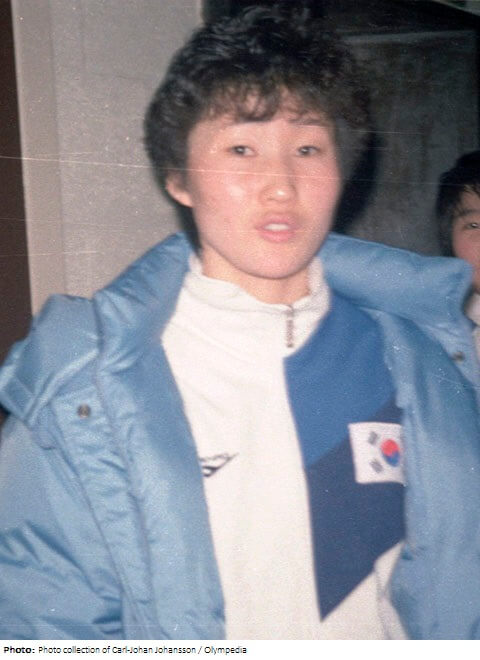

This page is dedicated to Kim Kyung-soon, who has dedicated her life to demanding redress and official apology from Japan for the military sexual violence that affected over 200,000 women during World War II.
Kim Kyung-soon was born in 1926 and passed away in 2016. Is an activist and a former Korean comfort woman.
For the past two dozen years, Kim, a member of the council, worked as a longtime activist to draw international attention to the plight of the tens of thousands of girls and women forced to work in Japanese military brothels throughout Asia during the early 20th century. According to the council, Kim had been coerced into sexual slavery at an army brothel in Hiroshima at the age of 19. Kim Kyung-soon, who survived sexual enslavement at the hands of the Imperial Japanese Army during World War II, died Saturday at Asan Medical Center in Seoul.She lived to be 90 years old.